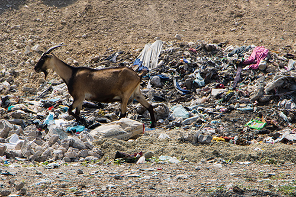
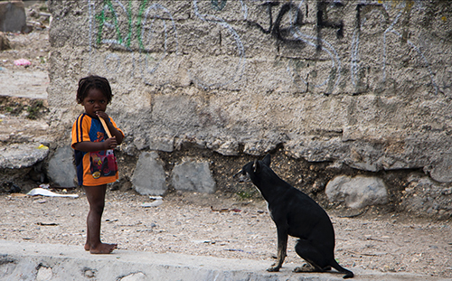
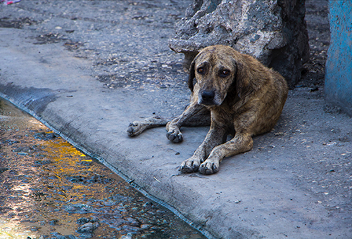
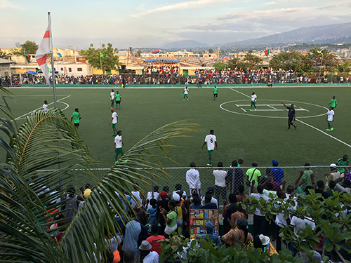
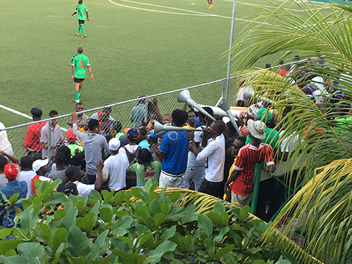
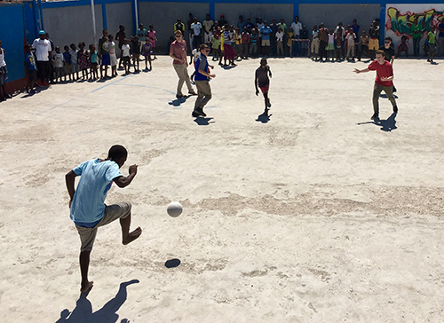
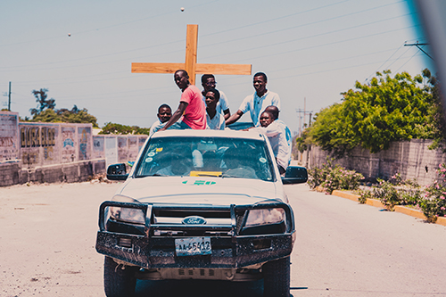
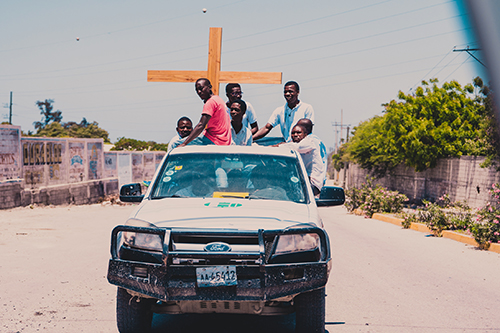

General Information
Haiti is a country in the Carribebean that happens to share the island called "Hispaniola" with the Dominican Republic. It is a country that remains beautiful after a past filled with turbulent disasters and shortcomings. Luckily, many of the country's landmarks which date back to the early 19th century still remain intact. There are a plethora of things to do if you are considering a vacation to the island such as sightseeing, indulging in the nation's cuisine, and enjoying the beaches.
Animals in Haiti
Haiti is bustling with wildlife, and you can find different types of animals everywhere that you look. You can find different species of birds, fish, spiders, etc. Some of the more common animals that you will find in the rural areas, or cities like Port-au-Prince are goats and wild dogs.
  Sports
Sports in Haiti are not immensely diverse, and the natives tend to only play the game of soccer, or football. While they don’t offer a wide-array of sports, they put all of their passion into soccer. Haiti even has a national soccer team that had qualified for the Fifa World Cup in the past.
  Religion
Roman Catholicism tends to be the religion that you will see most natives tieing to themselves in haiti. According to www.state.gov, it makes up for over 50% of its population. However, another religion that may catch you by surprise that many worship, is voodoo.
 
